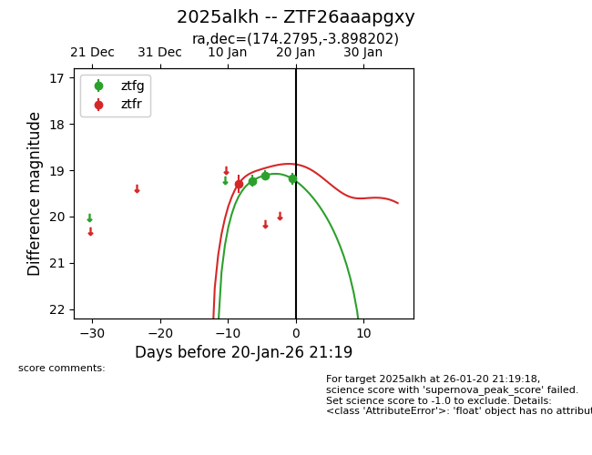
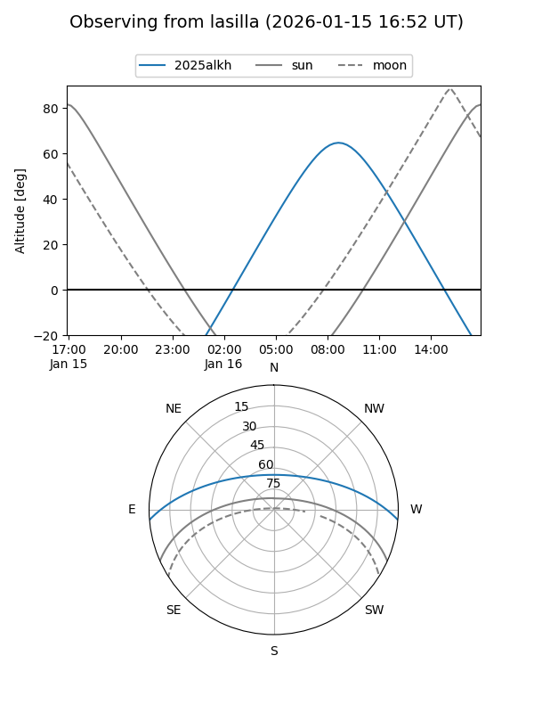
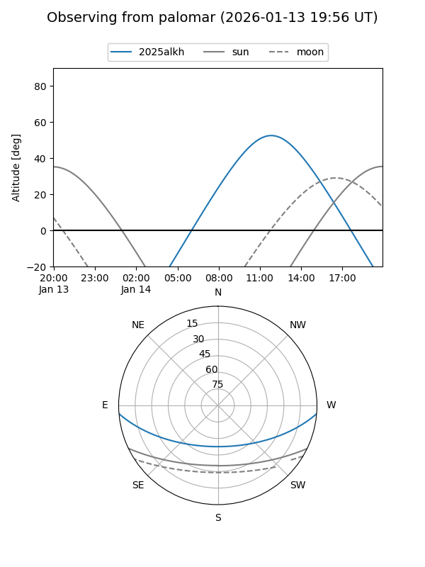
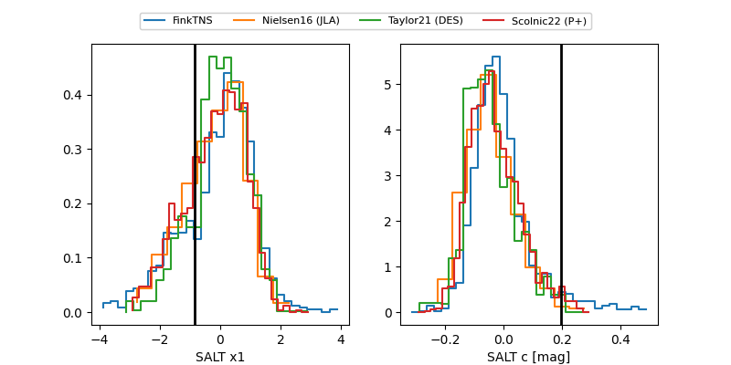

2025alkh
Target 2025alkh at 2026-01-20 21:21
Aliases and brokers:
FINK: link
Lasair: link
ALeRCE: link
TNS: link
YSE: link
alt names
ZTF26aaapgxy (ztf,fink_ztf)
2025alkh (tns,yse)
Coordinates:
equatorial (ra, dec) = 174.2795,-3.89820
equatorial (HMS+DMS) = 11:37:07.08,-03:53:53.53
galactic (l, b) = (270.0499,+54.15953)
Flags:
Photometry:
last ztfg=19.19, ztfr=19.29
3 ztfg, 1 ztfr detections
Lightcurve

Visibility


Additional plots
